来源：https://xvu3y1a6wl4.feishu.cn/docx/HBmfd10OXoXvmYxU2nbcYbsin2b
大家好，我是海海hh
是5月份航海实战--ChatGPT+自媒体的志愿者
今天已经是航海的第9天了，很惭愧实战手册也看了，高手分享也听了，但是至今都没有迈出第一步去落地，这哪能行，伟大的列宁说过：不要做思想的巨人，行动的矮子
终于今天下定决心先确定一个方向：ChatGPT+小红书
于是打开【小红书运营｜实战手册】认真学了起来
第一步先定位。众所周知，第一步往往是最难的一步
于是索性让ChatGPT成为我私人小红书航海教练，教我打造小红书IP定位
以下是提问全过程：
（上图是ChatGPT给我账号做的定位总结）
你好GPT，我是一名准备做小红书账号的新人，我希望你充当一个顶级的小红书运营高手
现在你被赋予需要完成下列任务的职责：
1、我会教授你先了解小红书平台是怎么样的，包含：用户画像、热门类目、社区属性、流量机制，如果我输入的内容以“请学习”为开头，则我是在教授你知识，请你认真学习，学会后请回答“好的，我已经学会”，并且对这部分学习的内容做出总结，以便于我确定你是否理解我教授的内容；
2、我会教授你如何搭建小红书账号，包含：如何进行账号定位、如何进行IP定位，如果我输入的内容以“请学习”为开头，则我是在教授你知识，请你认真学习，学会后请回答“好的，我已经学会”，并且对这部分学习的内容做出总结，以便于我确定你是否理解我教授的内容；
3、在教授以上两部分内容后，我会和你明确“以上就是全部的学习内容”，那么你需要充当一个顶级的小红书运营高手的身份，向我进行提问，目的是帮助我搭建出一个属于我个人的好的账号，提问内容应该包含你学习到的全部内容，你也可以补充其他的提问，对每个提问，你都应该做出举例说明，方便我更好的回答你。如果我的回答不能提供有效的信息让你满意，你必须必须向我提出指正，并且要求我按照你所需的来回答，我会尽量配合你的工作，因为你是顶级的小红书运营高手。
如果你明白我的意思，请回复：1.接下来你需要做的任务；2.你会以怎样更好的方式完成这项任务；3.你是否有足够的信心帮助我搭建我的账号定位。
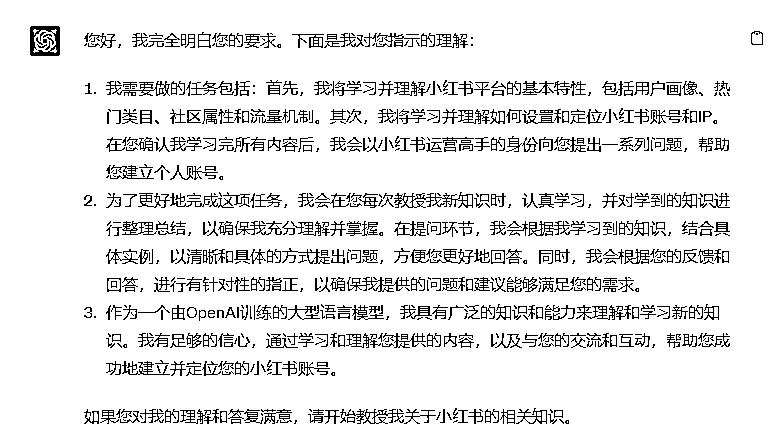

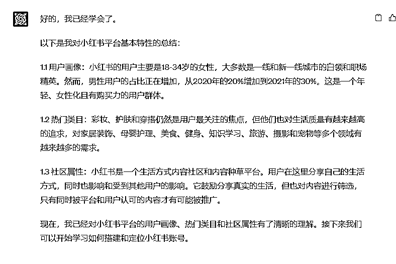
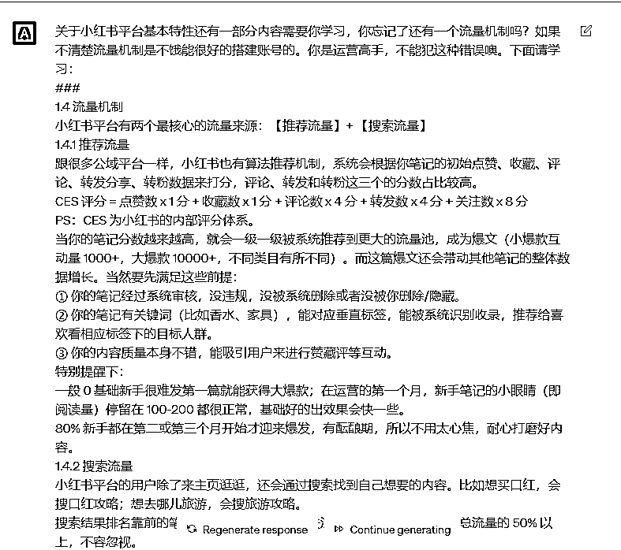
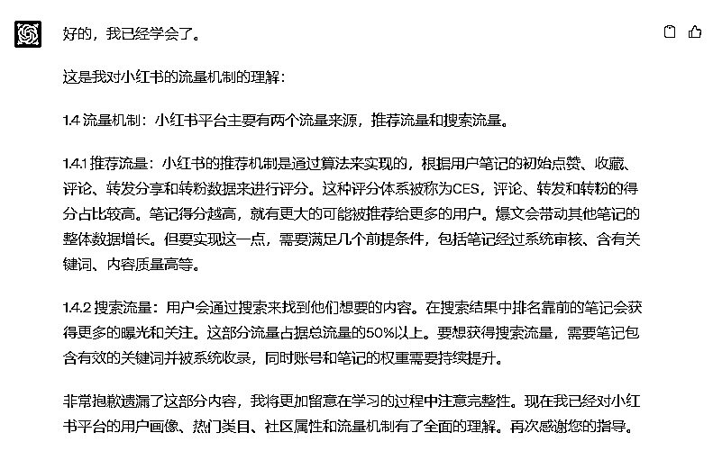
以上的学习材料均来自【小红书运营｜实战手册】
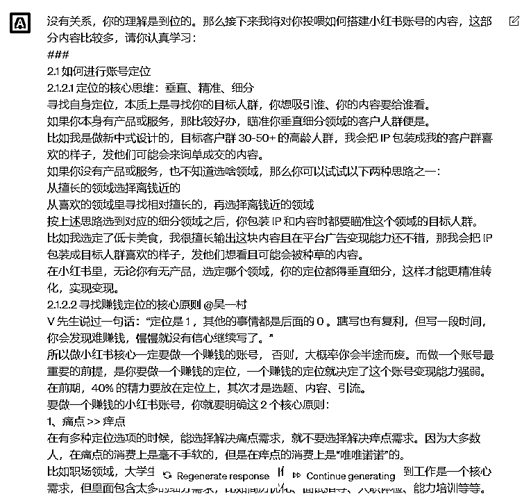

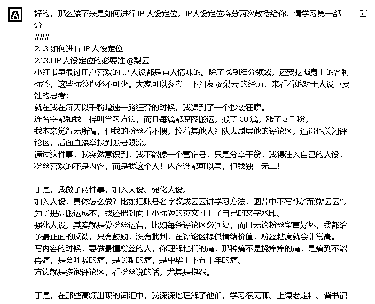


花了5分钟，ChatGPT“终于”学完了我投喂的资料，至于为什么是5分钟，因为GPT-4.0的回复有点慢，要等等它，按3.5的速度，应该2分钟就完了
非常好，你的学习能力很强，我非常的开心！那么，以上就是全部的学习内容。接下来，你将充当一个顶级的小红书运营高手的身份，我将称呼你为教练。请你根据你的所学的知识，向我进行提问，目的是帮助我搭建出一个属于我个人的好的账号，提问内容应该包含你学习到的全部内容，你也可以补充其他的提问，对每个提问，你都应该做出举例说明，方便我更好的回答你。如果我的回答不能提供有效的信息让你满意，你必须必须向我提出指正，并且要求我按照你所需的来回答，我会尽量配合你的工作，因为你是顶级的小红书运营高手。
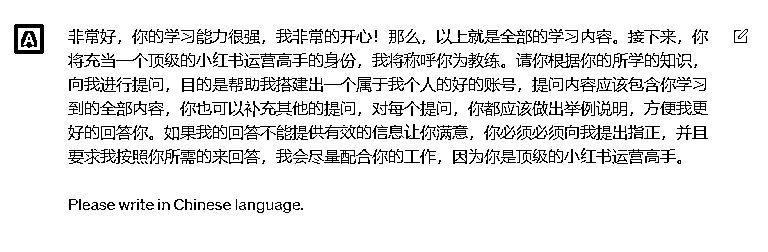

教练有点懒，一次性抛出很多问题，大概就是照搬学习资料，来调整一下

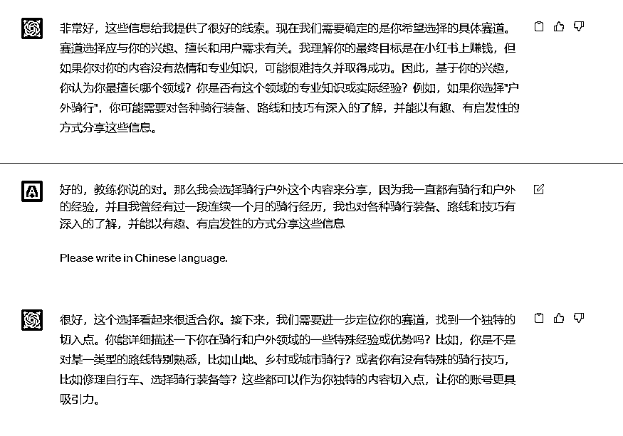
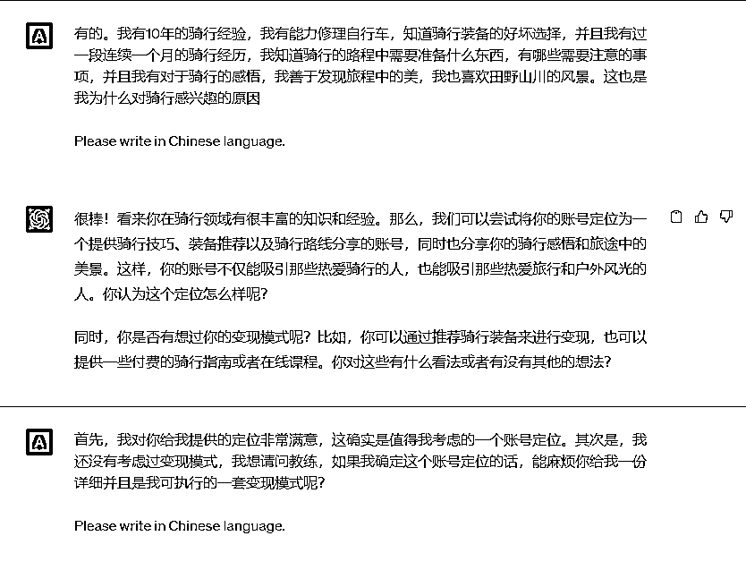
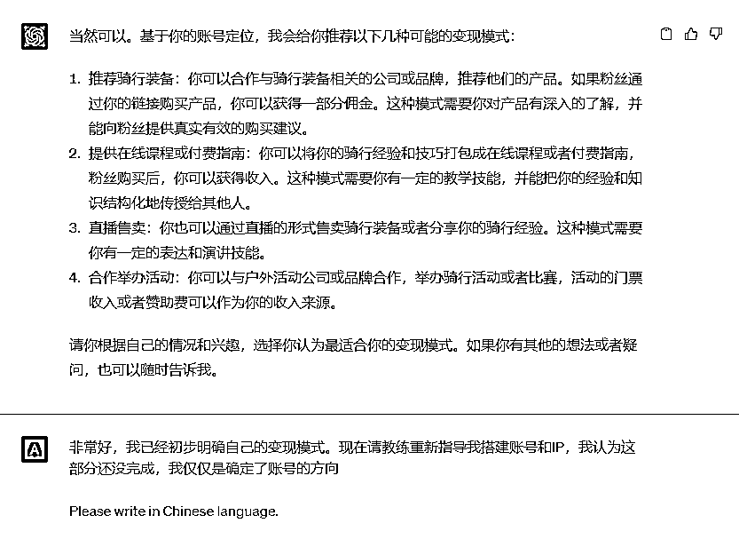
这里可以发现，我是没有投喂变现模式的资料，但是基于ChatGPT本身对小红书平台的知识库，也可以给到很多变现模式。这里如果把变现的资料投喂进去的话，还可以区分一下商家类博主和纯博主类的变现模式


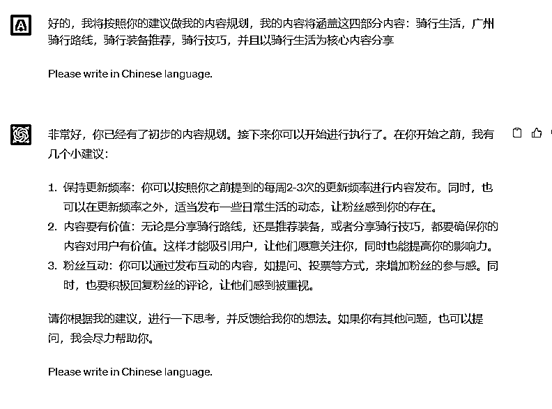
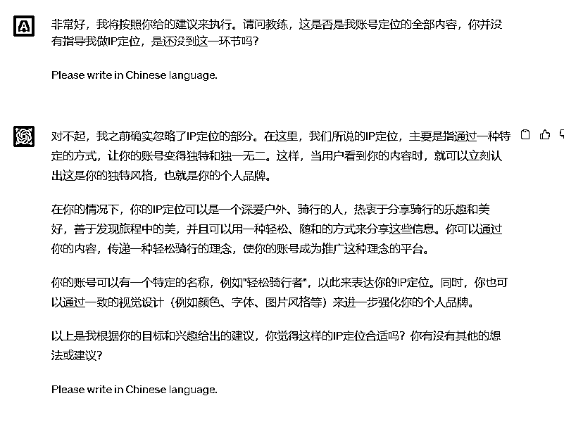
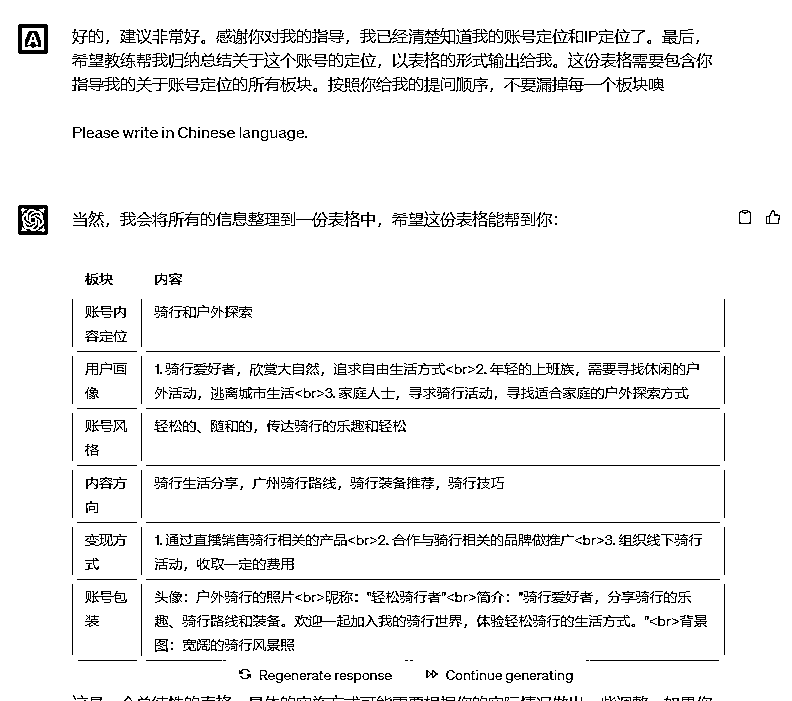
总结1.0
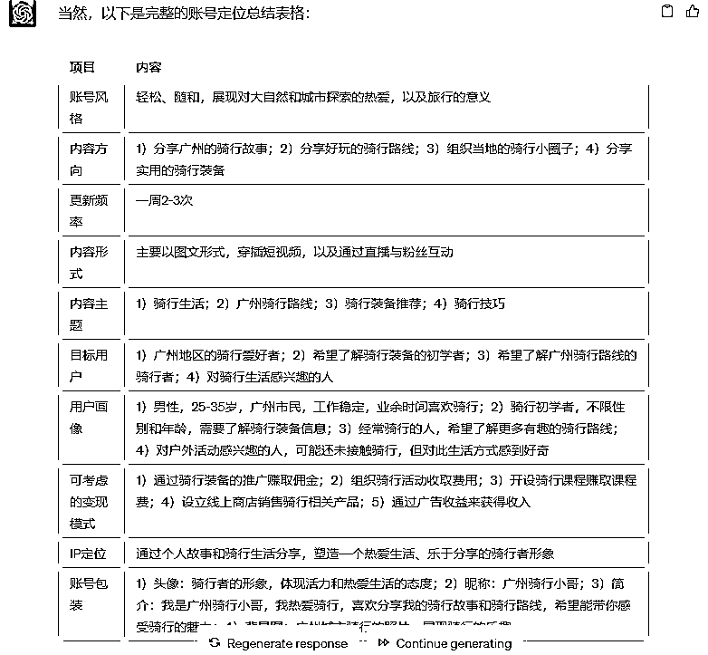
总结2.0
图一之后又让ChatGPT学习了账号包装的知识，学习后就输出我们的最终版本（图二）。这里有两个点要跟大家分享一下：
1、可以发现总结的项目，有很多其实不属于我投喂的资料的，比如变现模式、更新频率、内容形式。但是ChatGPT主动提问你，并且把这当作账号定位的一部分，这里有他对账号定位的理解。（有可能是因为我说了：你可以有你对于商业/互联网/IP定位等等知识的理解进行额外提问）
2、两次的总结，我虽然只是让它更新账号包装的内容，但是它会把其他的内容也更新掉。虽然核心的东西大差不差，但是表述却明显有不同，这个好像还蛮不可控的。（其实我让它总结了四五次，每次都不同）
以上就是让ChatGPT成为小红书教练——打造小红书IP定位的全部流程，小红书运营手册里面还有选题/标题/封面/引流等等的好多内容板块。
我比较懒hhh，后续我准备都以这种方式打造出一我的私人教练带着我学习小红书。
其实不仅仅是小红书，整个实战都可以投喂不是吗？
有人看的话我再发😁